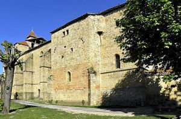
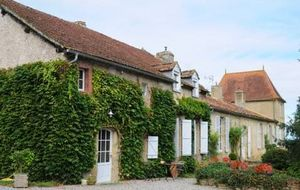
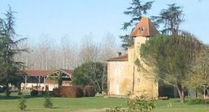
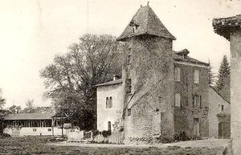
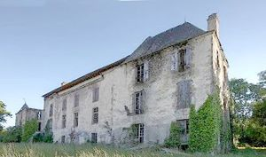

Recensement Jean-Claude Truffet
| Département | 32 — Gers |
| Canton | Plaisance |
| Commune | Beaumarchés |
| Type d'édifice | Manoir |
| Période d'origine | XII |





BEAUMARCHES, son nom provient d'Eustache de Beaumarchés, grand bâtisseur de bastides dans le Sud-Ouest de la France dans le cadre de sa fonction de sénéchal à Toulouse à partir de 1272. Toutefois, La bastide est créée par pariage entre le sénéchal Eustache de Beaumarchés représentant le roi Philippe Le Hardi dans le Sud-Ouest, et le comte de Pardiac en 1288. ESPARBES, la maison d'Esparbès, Esparvez ou Esparvers a eu pour berceau la seigneurie d'Esparbès, située à peu de distance d'Auch dans l'ancien vicomté de Fezensaguet et dans le canton français actuel de Mauvezin. Elle joint son nom à celui de la terre de Lussan qu'elle a longtemps possédée, jusqu'au mariage de Jeanne d'Esparbès de Lussan avec Jacques de Marmiesse en 1617 : ils seront les auteurs de la branche de Marmiesse de Lussan.
Elle compte au nombre de ses premiers membres connus Géraud d'Esparbès qui, en 1150, était prieur de Saramon, et Arnaud d'Esparbès qui, le 4 mai 1162, fait une donation aux religieux de Grand Selve. appartenant initialement à la famille "De Coutens", Thibaud De Podenas en devint propriétaire en 1434 avant de le vendre à Gaillard De Baure en 1454 La branche de Lussan est substituée aux noms et armes des Bouchard d'Aubeterre. Elle passa en Angoumois au XVIIe siècle. Elle s'est éteinte avec Emmanuel d'Esparbès de Lussan, mort pour la France le 16 août 1870 à Gravelotte. Cette propriété appartient à la famille Manzoni depuis deux générations. Elle a été achetée à la famille Hournac en 1968. Au sud-Est à quelques kilomètres le château de Labatut à Tieste-Uragnoux transformé en sci par Annette Lafourcade.
Beaumarchés, le village a connu ces dernières années un mitage de maisons individuelles quelconques dans sa périphérie qui ressort d'une perte de clairvoyance et de culture historique et urbaine par les acteurs (habitants, élus) de ces méfaits. La bastide est créée par pariage entre le sénéchal Eustache de Beaumarchés représentant le roi Philippe. Le vaste territoire de la bastide englobe alors Mondebat, Scieurac, Flourès, Armous-et-Cau, Monterran. Cependant la ville végète et ne connait pas un fort développement. Esparbès, ce château remonte au XIIe siècle, Il prit le nom de château d'Esparbès en 1749 lors du mariage de Rose De Rességuier avec François d'Esparbès de Lussan. Trois siècles plus tard, sa tour quadrangulaire a été remplacée par une tour ronde. Dépassant ces deux piliers, on se trouve face à une immense grange quaujourdhui abrite des dizaines de vaches. Sur la droite se situe une jolie maison, construite avec des pierres provenant de lancien château. A gauche, en face de cette maison se trouve un petit escalier de 6 marches entourées de deux petits murets. Cet escalier rejoint un espace plat ou se retrouve encore au sol des traces dune « terrasse » et un peu plus loin une bâtisse qui est aujourdhui un poulailler en rectangle. Sur sa droite un puits. Autour de cet ensemble se situe un grand fossé, mais qui sarrête en demi-cercle. A gauche du poulailler, se trouve un jardin bien entretenu suivit dun champ. Un puits sy trouve bizarrement placé au milieu. Labatut de plan rectangulaire à trois niveaux, le corps de logis central est accolé à deux pavillons de chaque coté du même niveau.
Famille d'Esparbès Sénéchal Eustache de Beaumarchés Famille de François d'Esparbès de Lussan
"
Château de Beaumarchés, d'Esparbés et de Labatut à Tieste-Uragnoux